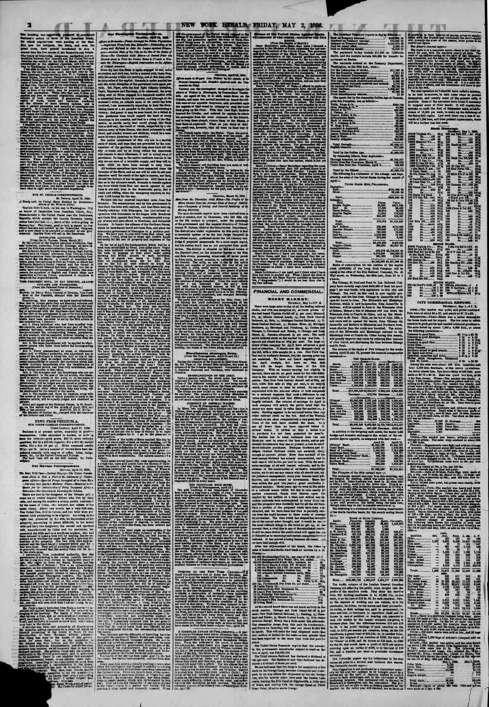

Aaends the squadron ot English and French skips now aaserobled at
https://www.loc.gov/resource/sn83030313/1856-05-02/ed-1/?sp=2

See the original pageVer la página original
According to the National Press of Dominica, as reported by The New York Herald on May 2, 1856, General Regla Mota, Vice President and charged with the Executive power of the Republic of San Domingo, issued a decree targeting foreign schemes and potential understandings with Haytiens. The decree mandates that any expelled individual who disembarks in Dominican territory without official permission, as well as anyone who hides them, shall be executed upon the identification of their person without a formal trial.
A tenor de la Prensa Nacional de Santo Domingo, reseñada por The New York Herald el 2 de mayo de 1856, el general Manuel de Regla Mota, vicepresidente encargado del Poder Ejecutivo de la República Dominicana, dictó un decreto contra asechanzas foráneas y posibles inteligencias con los haitianos. La disposición conmina a que todo proscrito que arribe a playas dominicanas sin salvoconducto oficial, así como cuantos les brinden abrigo, sea pasado por las armas comprobada su identidad y sin formación de causa.
Where this standsEn qué punto está
The full text of this article is still being prepared. Until it is ready, this page carries a summary, the passage found on the page, and the link to the original, which is always one click away.El texto completo de este artículo aún se está preparando. Hasta que esté listo, esta página lleva un resumen, el pasaje encontrado en la página y el enlace al original, que siempre está a un clic.
From the original pageDe la página original
The passage where this article was found, copied from the newspaper page itself, reading errors and all. This is exactly what the summary above is based on.El pasaje donde se encontró este artículo, copiado de la propia página del periódico, con sus errores de lectura y todo. Esto es exactamente aquello en lo que se basa el resumen de arriba.
aaends the squadron ot English and French skips now
aaserobled at Port an Prinoe, eomidered it requisite to
despatch the Argus forthwith.
?MB FRESIDRNT MOT A, OF BAN DOMINOO, AGAINBT
OUTLAWS AND FILIBUSTERS.
[From the National Press of Dominica.]
?CD. OOblfTBT. 1JBB8TT.
Marvkl i?u Rbgia Mota, General of Division, Vice Presi
dent ot the RspnbUo, charged with the Executive
power:?
Considering, that whereas we have reeeived infbrma
ttca that in toreign parts they are planning schemes and
iatrgu es which have for their object to disturb the traa
q utility of the tepnbiio?perhaps through an understand
ing or agreement with the Haytiens?and that rtgtlanee
wa the part of the government Is one of its first duties for
MM preservation of said tranquility?naiog the faculties
which have been eox ceded to me by the 36th article of
the eonsritnticn. I decree:?
Art. 1. Every individual who had been expelled from
the republic, and who disembarks in any part of the Ik>
nriniean territory, without having obtained before from
the government the corresponding licence, permission,
or safo conduct, will be executed, without forming or is
atitu'lDg any cause, and with no other requisite than tha
Identification of his person.
Art. 2. The same punishment wiU be applied to whnt
saever person who hides them before the corresponding
proceeding.
Art. 3. Every commandant at arms, or whatsoever
?ther civil or military authority, wbo apprehend any or
sona ef the individuals to whom the first ar icle of this
decree alludes, shall be obliged, under the strictest par
How to cite this articleCómo citar este artículo
The New York Herald. (1856). New York [N.Y.], May 2, 18562 de mayo de 1856. DR in the American PressRD en la Prensa Norteamericana. Library of Congress, Chronicling America: https://www.loc.gov/resource/sn83030313/1856-05-02/ed-1/?sp=2
ReferencesReferencias
Library of Congress, Chronicling America: The New York Herald, May 2, 18562 de mayo de 1856.
Send an observationEnviar una observación
Does this article connect with your family, your town, or something you know? Did we get something wrong? Write to us. Observations go to the editor's inbox and are read by a person.¿Este artículo conecta con su familia, su pueblo o algo que usted conoce? ¿Nos equivocamos en algo? Escríbanos. Las observaciones llegan al buzón del editor y las lee una persona.
Send observationEnviar observación